⑨ Galeri
Campuran render dan foto sebenar daripada bahan pemaju. Semua imej = hak pemaju.
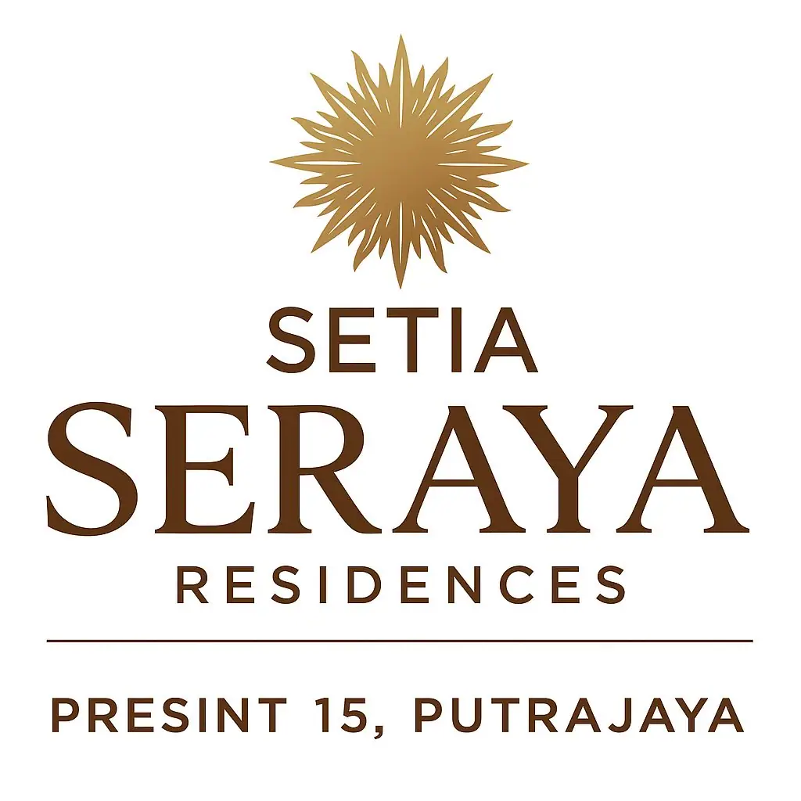
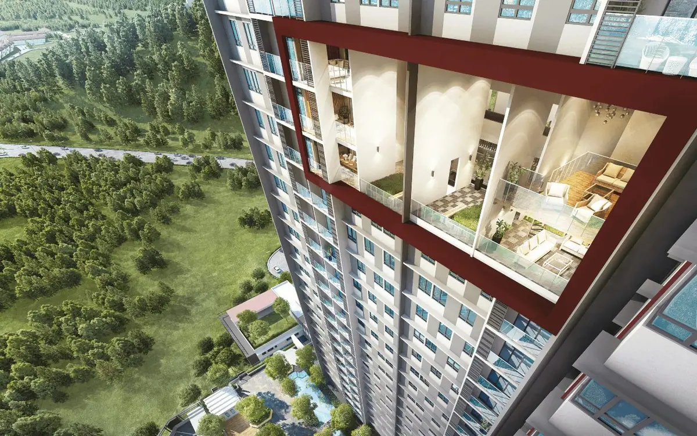
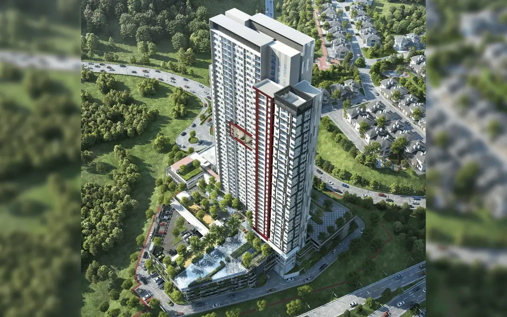

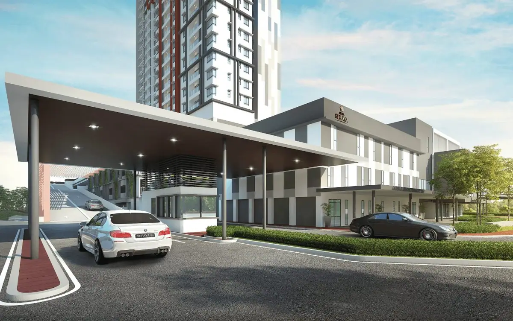
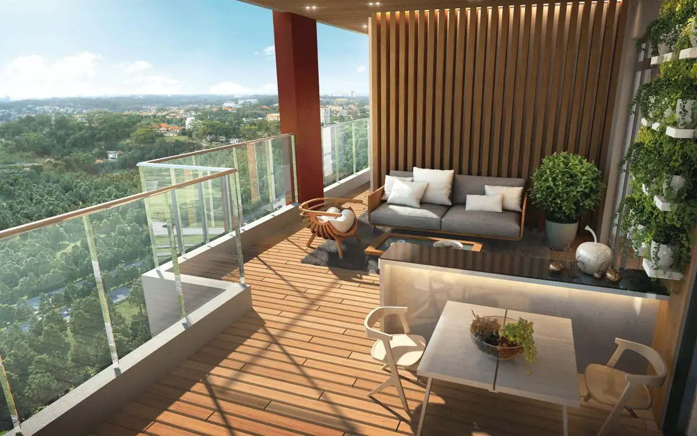
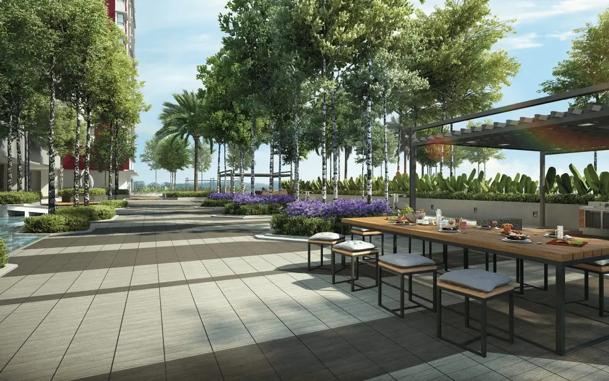
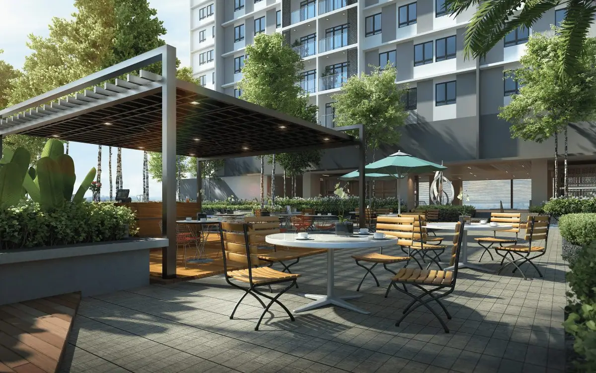
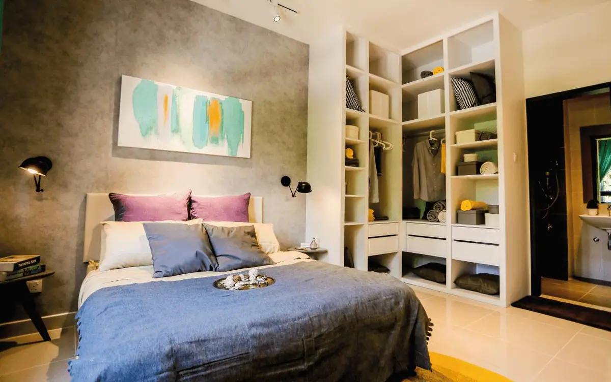
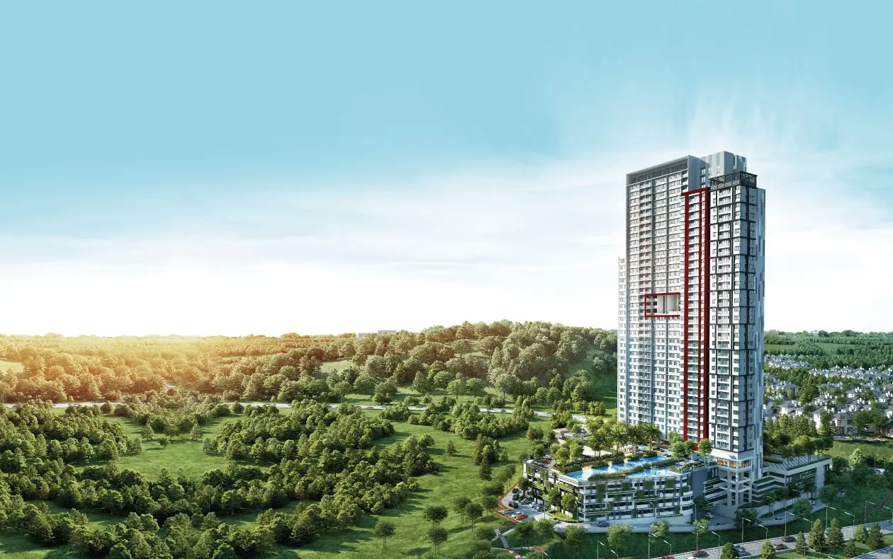
🏢 Setia Putrajaya Development Sdn Bhd (424955-P) — SP Setia Berhad · 📍 Presint 15, Putrajaya, Putrajaya
Satu pandangan pantas sebelum anda baca butiran teknikal.
Siap sepenuhnya — 40 tingkat, 363 unit; kemudahan lengkap termasuk sky garden aras 22
Projek siap — tiada harga pelancaran. Harga jualan semasa adalah pasaran sekunder (perlu semak sebelum papar; jangan papar angka tak disahkan)
Diambil daripada bahan rasmi pemaju & permit iklan.
| Jenis pembangunan | Kondominium (1 blok, 40 tingkat) |
|---|---|
| Unit | 363 unit (ketumpatan rendah) |
| Keluasan binaan | 1,002 – 1,420 kps |
| Bilik | 3 – 4 bilik tidur |
| Petak kereta (aksesori) | perlu diisi daripada brosur berpermit |
| Pegangan tanah | Freehold (kekal) |
| Sekatan kepentingan tanah | perlu diisi daripada brosur berpermit |
| Tarikh jangkaan siap | Siap & diserahkan (VP 26/10/2022) |
| Pihak berkuasa (PBT) | Perbadanan Putrajaya |
| Rujukan pelan bangunan | PPj/PER/KBKB/2015/P15-165(24) |
Setiap iklan projek baharu di Malaysia wajib memaparkan butiran ini (Peraturan 6, Peraturan-Peraturan Pemajuan Perumahan 1989).
Butiran wajib Peraturan 6 (a)–(k). Medan merah = belum diperoleh; jangan terbit halaman ini tanpa melengkapkannya.
| Nama pemajuan | Setia Seraya Residences @ Presint 15 |
|---|---|
| Pemaju berlesen | Setia Putrajaya Development Sdn Bhd (424955-P) — SP Setia Berhad |
| No. lesen pemaju + tempoh sah | 7403/10-2023/2302(R) — sah 08/10/2022 – 07/10/2023 (dari e-pamflet rasmi; perlu semak lesen terkini) |
| No. Permit Iklan & Jualan + tempoh sah | perlu diisi daripada brosur berpermit |
| Pihak berkuasa tempatan | Perbadanan Putrajaya |
| Rujukan pelan bangunan | PPj/PER/KBKB/2015/P15-165(24) |
| Pegangan tanah & sekatan | Freehold (kekal) |
| Tarikh jangkaan siap | Siap & diserahkan (VP 26/10/2022) |
| Harga & bilangan unit setiap jenis | Projek siap — tiada harga pelancaran. Harga jualan semasa adalah pasaran sekunder (perlu semak sebelum papar; jangan papar angka tak disahkan) |
| Ejen diberi kuasa | IQI Realty — Zahir (PEA 2684) & Fadilah (PEA 2313) |
Harga rasmi mengikut permit/brosur pemaju. Rebat & promo dilabel secara berasingan.
| Jenis unit | Keluasan | Bilik | Kereta | Harga (rasmi) |
|---|---|---|---|---|
| Type A Layout cekap untuk keluarga muda | 1,002 | 3R + 2BA | perlu_isi | pasaran sekunder |
| Type B Keluarga besar | 1,202 | 4R + 3BA | perlu_isi | pasaran sekunder |
| Type C Terbesar — dengan lanai | 1,420 | 3R + 2BA + lanai | perlu_isi | pasaran sekunder |
Setiap baris boleh jadi mesej WhatsApp pra-isi: "Tanya unit ini" — akan diaktifkan dalam Fasa 1 produksi.
Pelan daripada bahan rasmi pemaju — minta salinan PDF semasa lawatan showroom.
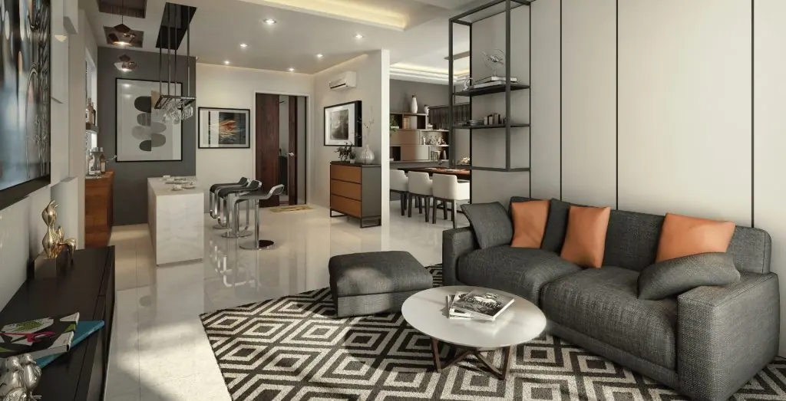
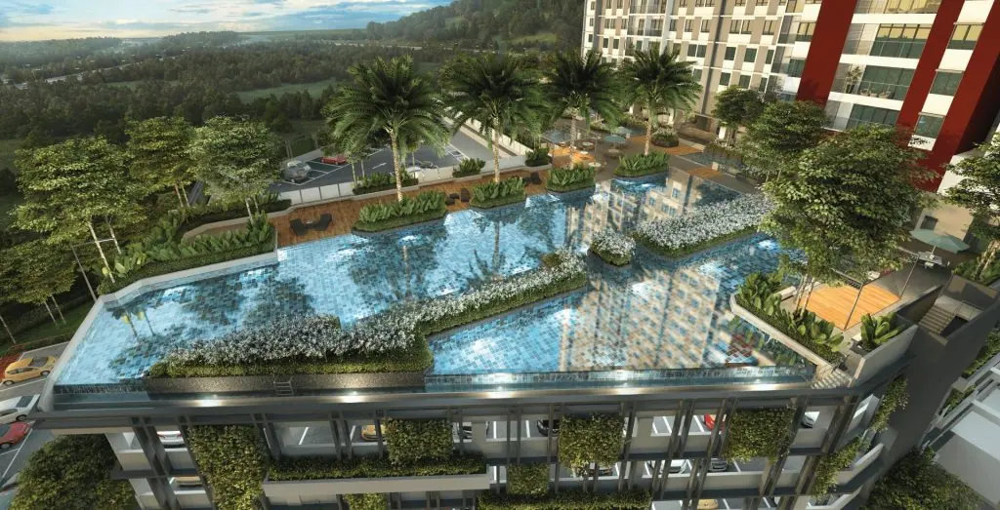
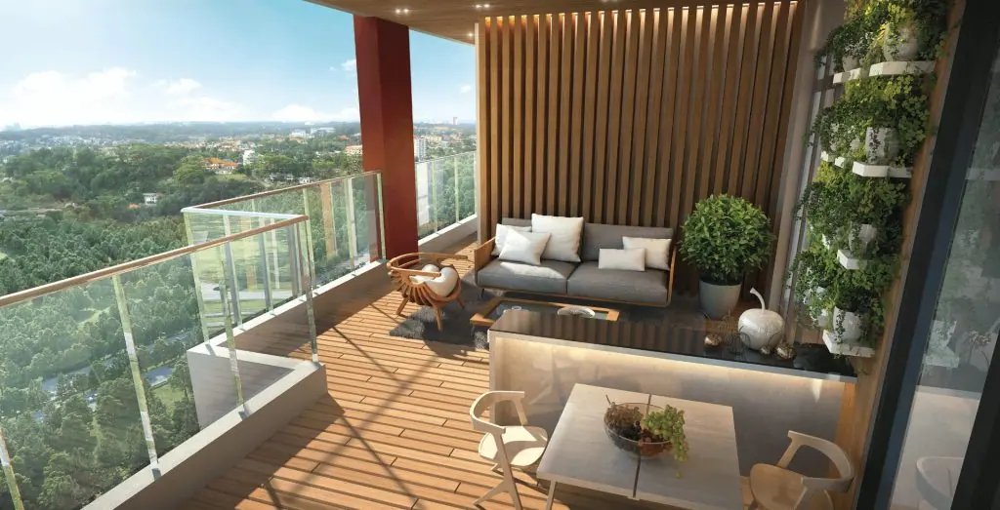
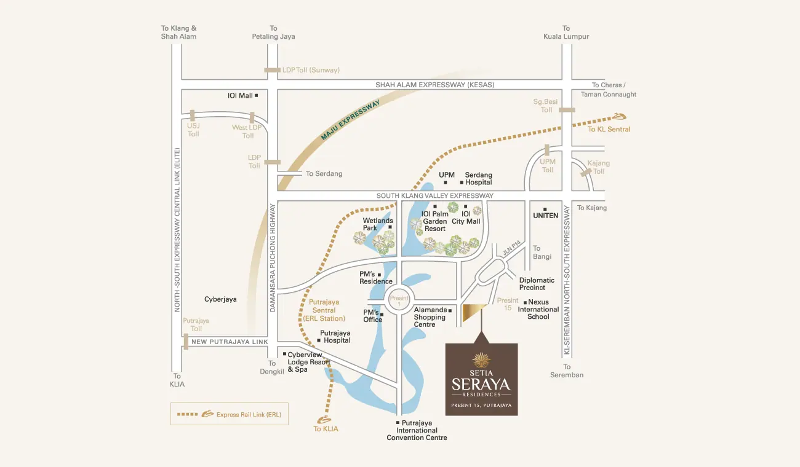
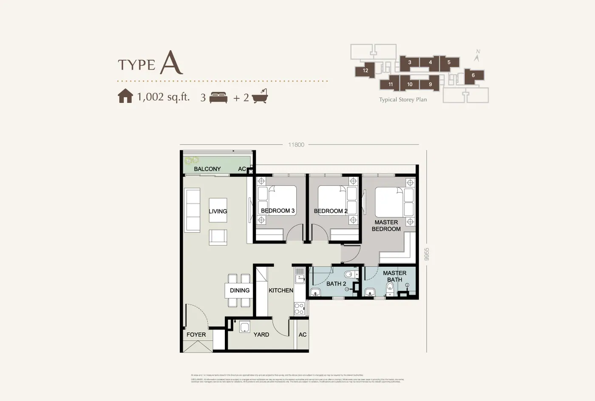
Jarak bernombor — bukan perkataan "berdekatan".
| Alamanda Shopping Centre · dalam Presint 15–16, jarak dekat | perlu diisi / sahkan |
| Putrajaya Sentral (ERL/MRT) · akses ke KLIA & KL | perlu diisi / sahkan |
| SKVE · MEX · Lebuhraya Utara-Selatan · KESAS · rangkaian lebuh raya utama | perlu diisi / sahkan |
| Universiti (UKM, UPM, University of Cyberjaya) · dalam lingkungan pandu 20 minit | perlu diisi / sahkan |
| Hospital Putrajaya · dalam Putrajaya | perlu diisi / sahkan |
Peta interaktif akan dibina pada Fasa 2 (peta statik + pautan Waze/Google — kos RM0).
Campuran render dan foto sebenar daripada bahan pemaju. Semua imej = hak pemaju.








Fasa 3: kemas kini foto tapak bulanan automatik + notifikasi kepada pelanggan yang daftar minat.
Tarikh siap rasmi dinyatakan dalam permit iklan pemaju (lihat kad fakta & panel permit). Tarikh boleh berubah — kami kemas kini bila pemaju mengeluarkan pindaan permit.
Baki unit berubah setiap minggu. Kami paparkan status terkini yang kami peroleh; untuk ketersediaan hari ini, WhatsApp kami dan kami semak dengan sales gallery dalam masa yang sama.
Jika pemaju menawarkan rebat, kami paparkan sebagai tawaran pemaju bersama tarikh sah — bukan sebagai harga tetap. Angka rebat mesti bertulis daripada pemaju.
Boleh. Kami boleh bantu semak kelayakan (DSR) dan bandingkan pakej beberapa bank. Untuk leasehold, bank menilai margin/tenure berbeza — jadi penting untuk semak awal.
Bayaran tempahan & ansuran pembinaan dibayar kepada akaun pemajuan (HDA) pemaju mengikut perjanjian jual beli (SPA). Wang tidak dibayar kepada ejen.
Lazimnya setiap hari pada waktu galeri jualan. Beritahu kami masa sesuai — kami aturkan lawatan bersama anda.
Yuran penyelenggaraan anggaran biasanya dinyatakan dalam SPA/brosur. Jika tidak dipaparkan di sini, kami boleh dapatkan angka rasmi daripada pemaju.
Kami aturkan lawatan showroom, semak baki unit dan bantu semak kelayakan pinjaman (DSR) — tanpa kos.
Penafian: Projek sudah siap & diserahkan. Halaman ini mengekalkan data projek, fasiliti dan pelan untuk rujukan; tiada harga pelancaran dipaparkan. Gambar = render/hak pemaju. Render = artist's impression. Harga, unit dan spesifikasi tertakluk kepada Permit Iklan & Jualan pemaju dan Perjanjian Jual Beli (SPA). Gambar & bahan adalah hak pemaju — digunakan di sini untuk pratonton reka bentuk sahaja.
Dijual oleh: IQI Realty — Zahir (PEA 2684) & Fadilah (PEA 2313)
Pemaju: Setia Putrajaya Development Sdn Bhd (424955-P) — SP Setia Berhad
Sumber data: spsetia.com/property/setia-seraya (laman rasmi projek) · E-Pamflet rasmi Seraya (butiran lesen pemaju, rujukan pelan & tarikh siap)
Halaman dikemas kini: 2026-09-12